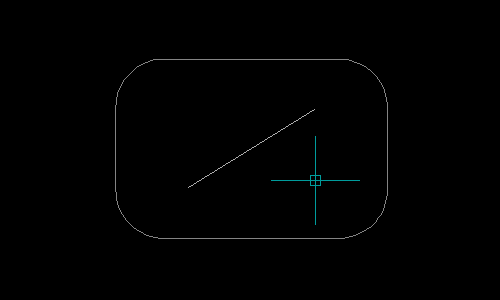

Label
This page is delivered for consistency purposes only, as part of the LeeMac sample module of DynALisp, which shows how DynALisp turns existing AutoLISP programs into a module. The program and its description are the work of Lee Mac, who keeps all the credit for them. The original page, with the latest version, is on Lee Mac's website: https://lee-mac.com/label.html
| Function Syntax | LM-Label – original syntax: Label (see aliases) |
| Current Version | 1.1 |
| Compatible with AutoCAD for Mac? | No |
| Compatible with AutoCAD LT? | Yes |
| Original Page | lee-mac.com/label.html |
Program Description
This program is a stripped down, faster & improved version of my previously published Align Text to Curve program.
Where my previous text alignment program permitted the user to align existing Text, MText or Attributes, this rather more refined program has been streamlined to allow the user to solely create MText 'labels' dynamically aligned to a selected object, with additional placement controls available at the command-line.
The user is first prompted to specify the content for the label, during which the previously entered string is available as a default option. The user is then prompted to select an object to be labeled.
The selected object can be any object defined as a Curve Object, this includes: Lines, XLines, LWPolylines, 2D (Heavy) Polylines, 3D Polylines, Arcs, Circles, Ellipses, Elliptical Arcs & Splines. The user can also select objects nested within uniformly scaled Blocks, Dynamic Blocks or XRefs, nested to any level.
Following valid responses to both prompts, the program will create a middle-center justified MText label with the specified content and allow the user to dynamically position the label along the selected curve.
During label positioning, additional alignment controls are available at the command-line to refine the position of the label relative to the curve. Such controls are described in the following table:
| Label Alignment Controls | ||
|---|---|---|
| Key | Action | |
| Click | (or Enter/Space/Right-Click) Place Label | |
| + / - | Increase / Decrease Label Offset (by factor of text height) | |
| O / o | Specify exact Label Offset | |
| P / p | Toggle Label Perpendicularity | |
| B / b | Toggle Label Background Mask | |
The program will furthermore work under all UCS & View settings, and with Annotative Text Styles.
This program may be useful for projects involving pipeline labeling on a P&ID, labeling of electrical wiring diagrams, or in other such situations in which a label is aligned to an object and may occur multiple times along the length of an object.
Demonstration

Bundled program notes
;;------------------------=={ Label }==-----------------------;;
;; ;;
;; Allows the user to create MText labels dynamically ;;
;; aligned to a selected object, with additional placement ;;
;; controls available. ;;
;; ;;
;; Works with primary & nested objects (uniformly scaled), ;;
;; and in all UCS/Views. ;;
;;------------------------------------------------------------;;
;; Author: Lee Mac, Copyright © 2012 - www.lee-mac.com ;;
;;------------------------------------------------------------;;
;; Version 1.1 - 15-01-2012 ;;
;; Fixed intermittent divide by zero error. ;;
;;------------------------------------------------------------;;
Command Names And Aliases
As in every DynALisp module, each program of this sample module has one main command, named LM-*, and the original command names of Lee Mac's page are kept as its aliases: they run the same command, and can be added, renamed or removed in Dyl-Suite (saved in Resources\Aliases.csv).
| Command | Aliases | Name |
|---|---|---|
| LM-Label | LABEL | Label |